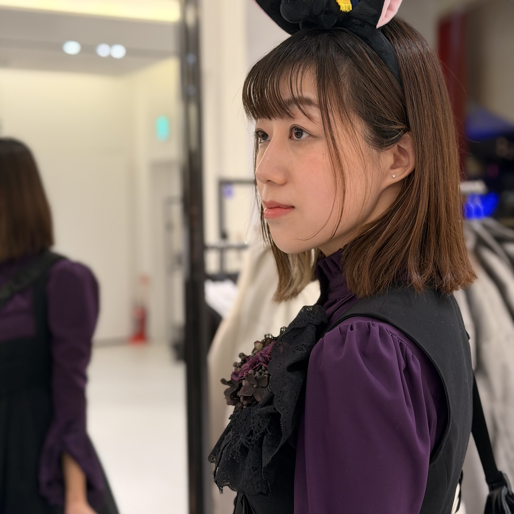
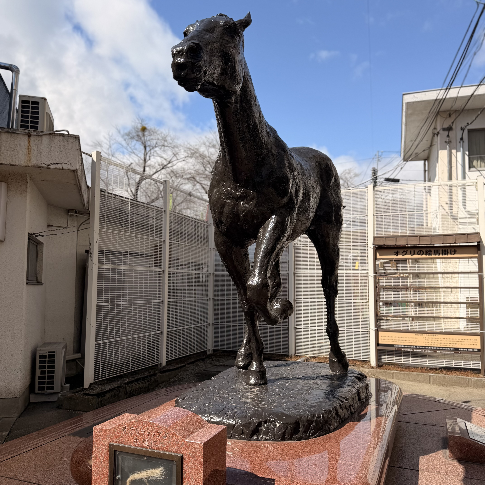
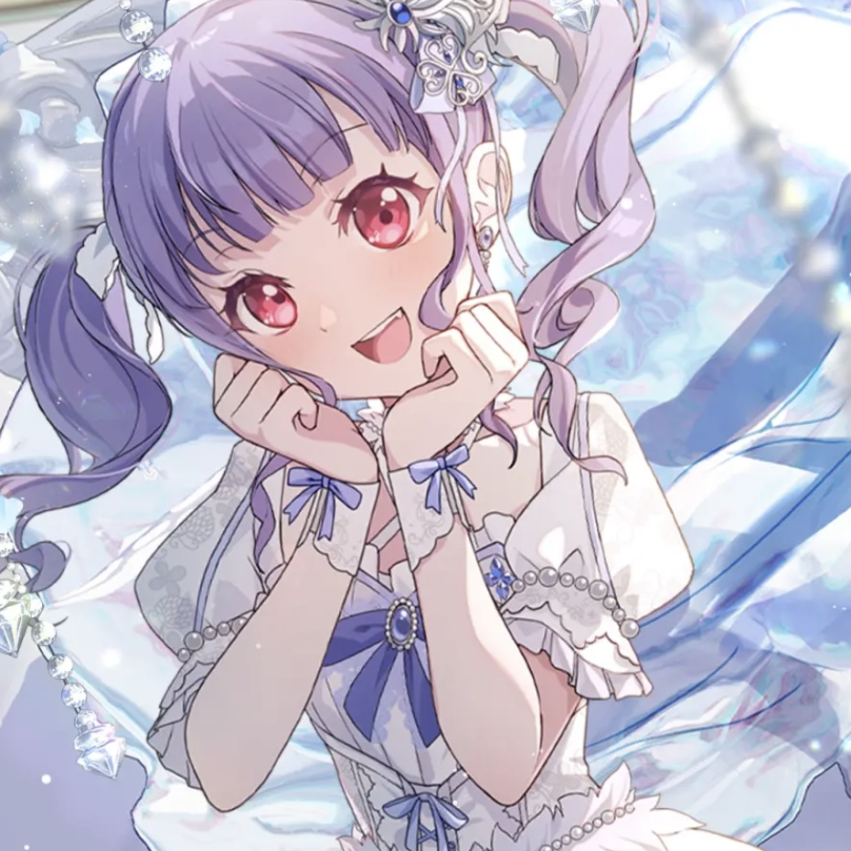
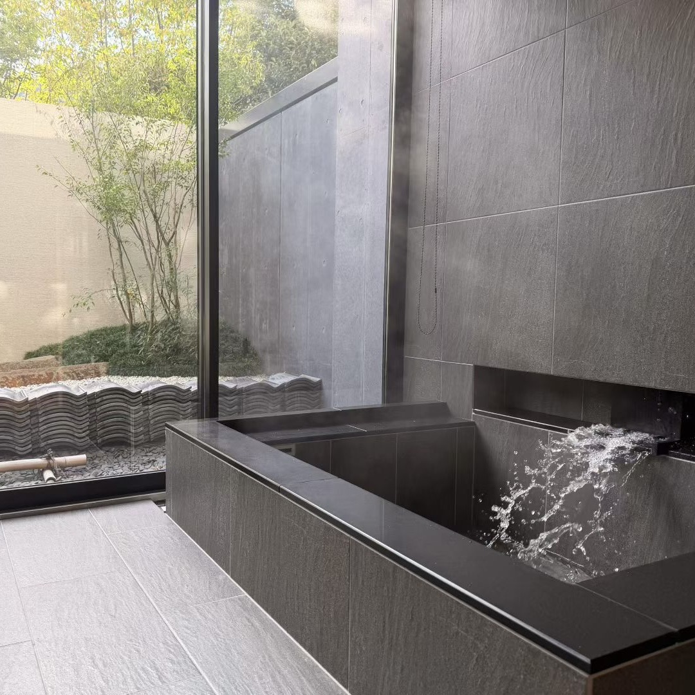

発信
Zyal Wangです。
好奇心をかたちにしながら、生きています。
デジタルマーケターとして働きつつ、
ものをつくり、AIを探求する日々。
データで物語を紡ぎ、
コードでアイデアを育て、
書くことで、思考を深めています。
ここは、私のための小さなデジタルガーデンです。
いま気になっていること → Lovableで深夜のバイブコーディング
準備が整うのを待たない。
まず動く。答えはあとからついてくる。
これは、自分なりの行動原則。
27K+
Rednoteのいいね・保存数
5
AIでつくった個人プロジェクト
Healthcare
届くマーケティングを
Global
ボーダーレスな発信
About

東京とインターネットのあいだで、考え続けている人。
Zyalです。ふだんはヘルスケアマーケティングの仕事をしています。
むずかしいことを、ちゃんと届く言葉にするのが仕事です。
でも、深夜になってもパソコンを閉じられないのは、
AIで実験していたり、新しいプロジェクトを考えていたり、
Rednoteに何かを書こうとしているから。
マーケティングとものづくりが重なるところが、いちばん好きです。
週末のプロトタイプは、どんな講座よりも学びが多いし、
いちばんいいアイデアは、計画よりも好奇心の先にあると思っています。
Life




ロリータ
気分と記憶とお芝居のような装い。やわらかく見られたいときの服。
Projects & Experiments


My Childhood Global
違う国で育った人たちは、子ども時代を同じように覚えてるんだろうか？ 気になって、確かめる場所をつくってみた。
深夜のノスタルジア談義がきっかけ プロジェクトを見る ↗


いま探求していること
AI × クリエイティビティ
個人サイトの復権
書くこと＝考えること
許可なく、つくる
遊び場としてのインターネット
バイブコーディングという表現
異文化ストーリーテリング
できること
デジタルマーケティング
SEO、広告運用、キャンペーン設計。発想力とスプレッドシートが同居する日常。
ヘルスケア
トレンドより信頼が重い業界でのマーケティング。だからこそ真剣にやる。
AI & バイブコーディング
プロンプト、プロトタイピング、昨日まで存在しなかったものをつくる。いちばん楽しいところ。
ウェブサイト & 自動化
ページ制作、分析、めんどうなことは自動化して、おもしろいことに集中する。